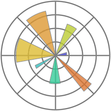
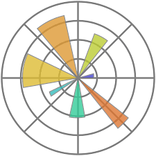
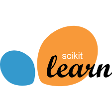

My Skills
NumPy
 Pandas

Matplotlib
Pandas

Matplotlib

SckitLearn
Tableau
 RDBMS | MySQL
RDBMS | MySQL
About Me
Hi, I’m Nancy! I’m a proactive, self-motivated, and ambitious individual with a strong passion for innovation, technology, and the field of Data Science
I enjoy leveraging my coding skills to uncover valuable insights from complex data and build frameworks for pattern recognition. I believe transforming raw data into actionable findings is essential for a company to excel, innovate, and adapt in a dynamic environment.
Beyond my technical pursuits, I enjoy reading and watching movies. I enjoy connecting with new people as it offers diverse perspectives. I’m also an avid sports fan and relish playing badminton and table tennis..